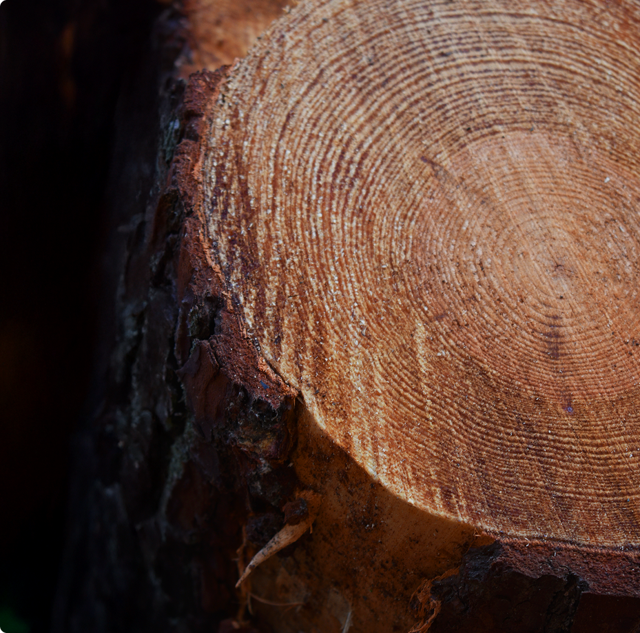
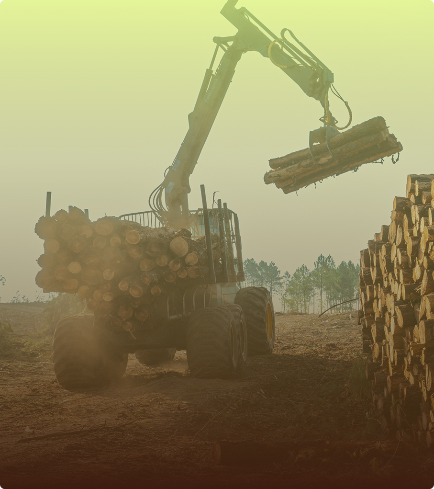
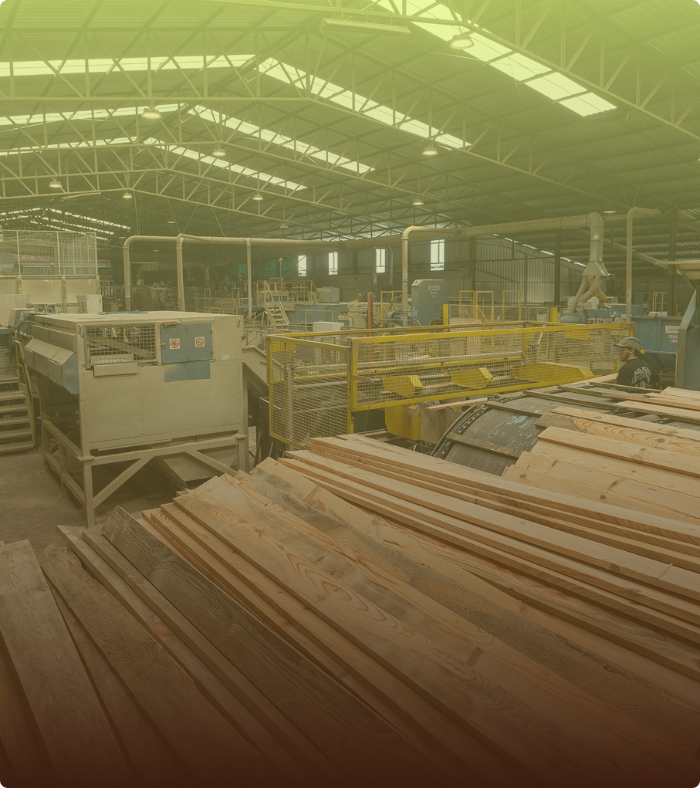
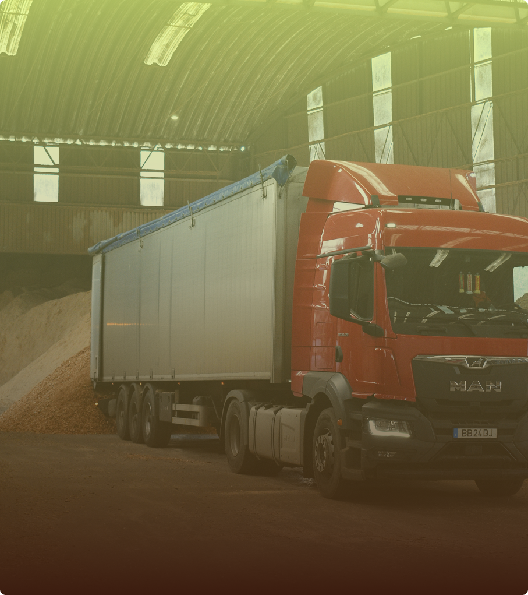
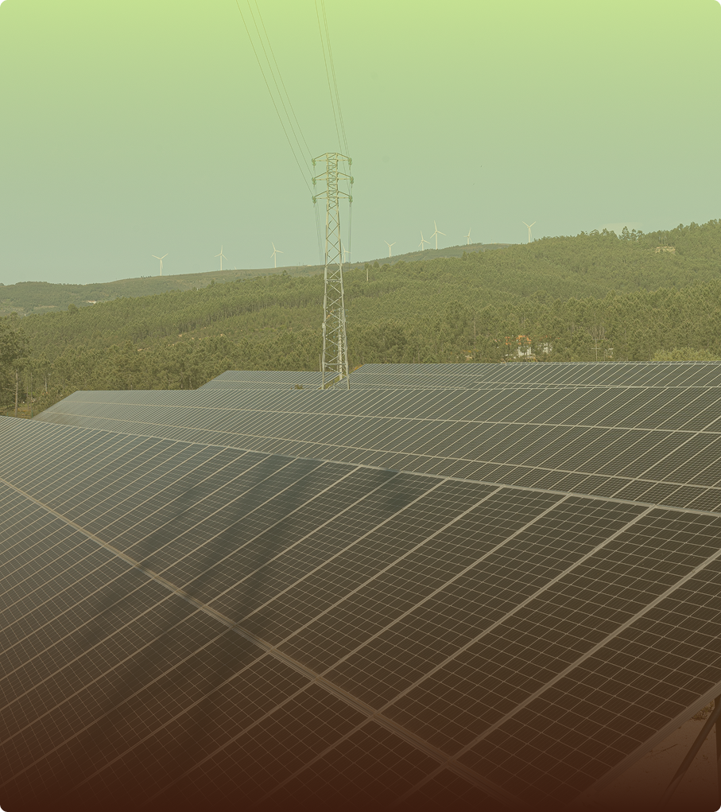
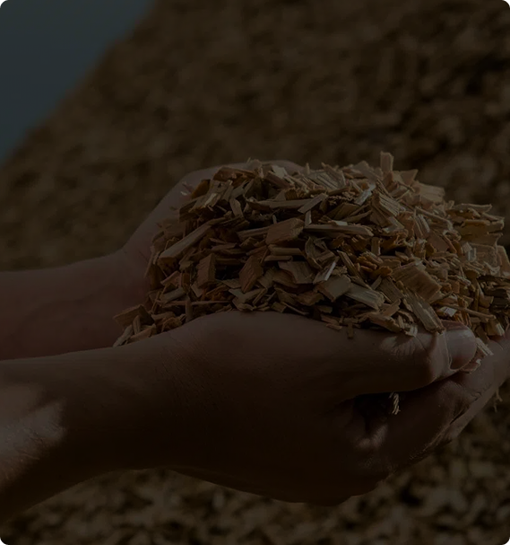
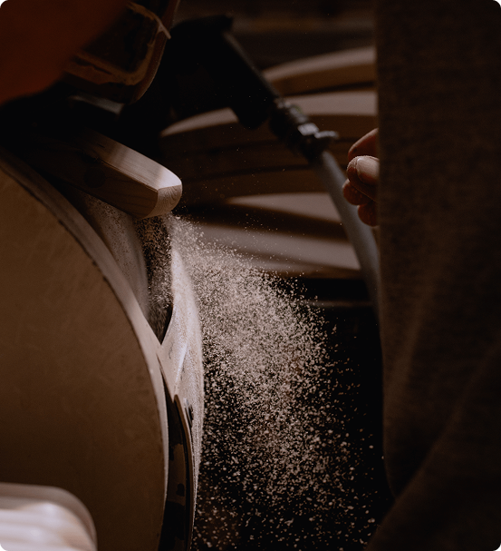
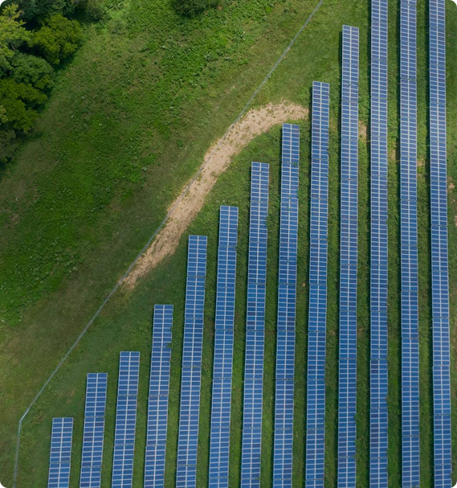

Qualidade, Confiança
e Tradição em Cada Corte.
Criada em 1990, JAF é uma empresa familiar dedicada à exploração florestal, serração e transporte de madeira, garantindo qualidade e sustentabilidade em cada etapa. Sempre com o compromisso de transformar os recursos naturais em soluções eficientes. Confiança, tradição e inovação são as nossas palavras-chave.
Fundada por José Afonso, a JAF nasceu do amor pela floresta e da vontade de a preservar. Ao longo dos anos, a empresa tem crescido, mantendo-se fiel aos valores de sustentabilidade e responsabilidade social que a caracterizam. Com mais de 30 anos de experiência, a JAF continua a inovar, utilizando as melhores práticas do setor para garantir a qualidade dos seus produtos e serviços.

01.
A JAF dedica-se à gestão e exploração sustentável de recursos florestais, garantindo o fornecimento de madeira de pinho e eucalipto de alta qualidade. Privilegia práticas responsáveis e certificadas, assegurando a preservação das florestas e a valorização de matérias-primas locais.

02.
Com unidades produtivas modernas e eficientes, a JAF transforma a madeira em produtos de excelência como madeira serrada, pellets e briquetes. Todo o processo é otimizado para aproveitar integralmente a matéria-prima, convertendo subprodutos em novas oportunidades de negócio e acrescentando valor em cada etapa de produção.

03.
A empresa dispõe de uma frota própria de camiões, garantindo a entrega rápida e segura das matérias-primas e produtos acabados. Além de servir as necessidades internas, a JAF presta serviços de transporte de mercadorias a terceiros, aproveitando rotas para otimizar custos e tornar a frota mais sutentável.

03.
A JAF aposta na produção de energia limpa a partir da biomassa, através de pellets e briquetes certificados de alta qualidade. Estes combustíveis sólidos renováveis são exportados para diversos mercados europeus e destinam-se tanto ao consumo doméstico como industrial, contribuindo para a redução da pegada de carbono.
Na JAF, cada produto é resultado de um processo rigoroso que alia experiência, inovação e respeito pelo meio ambiente. Desde a madeira serrada aos pellets e briquetes, garantimos qualidade certificada, eficiência e sustentabilidade.
Assumimos uma gestão florestal responsável, garantindo que cada intervenção respeita o equilíbrio dos ecossistemas e contribui para a preservação das florestas para as gerações futuras.
Do corte da madeira à produção de energia, aproveitamos cada etapa para criar valor e reduzir desperdícios. Este ciclo fechado garante um aproveitamento integral da matéria-prima e reforça o nosso compromisso com a sustentabilidade.
Com certificações como ENplus-A1, FSC® e PEFC, asseguramos não apenas a qualidade dos nossos produtos, mas também a conformidade com as mais rigorosas normas de gestão florestal e responsabilidade ambiental.
Atualidade


